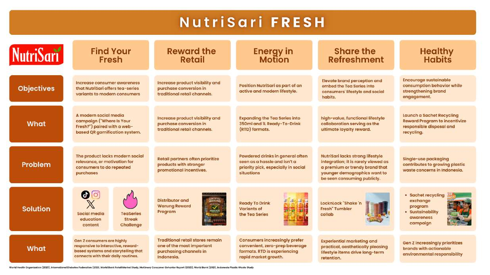
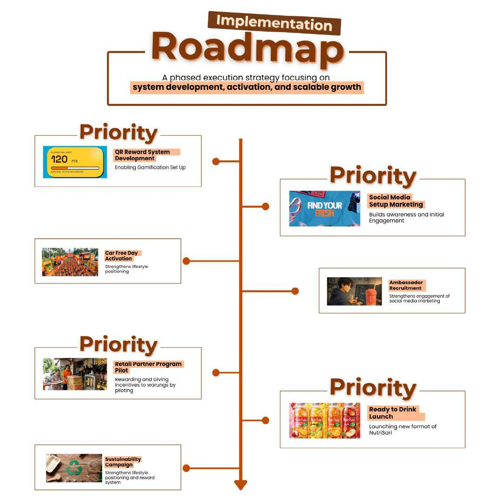
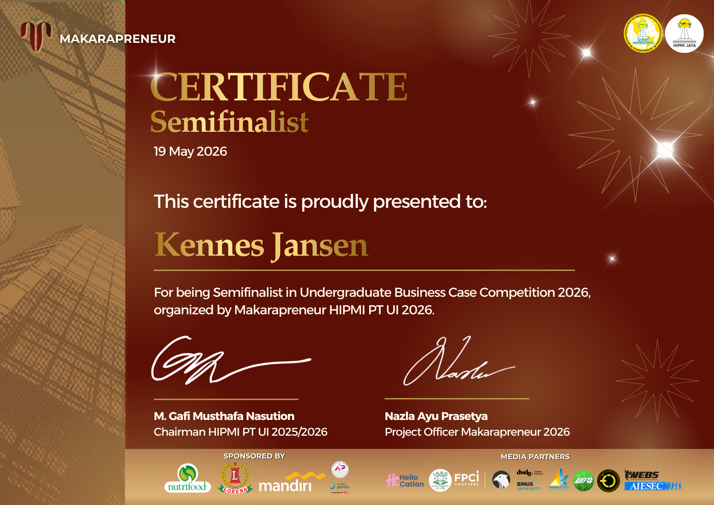

BUSINESS CASE COMPETITION / SEMIFINALIST 2026
Go “FRESH”
With NutriSari.
Connecting consumer insight with a plan for everyday relevance.
A team proposal for NutriSari Tea Series, submitted to the Makarapreneur Undergraduate Business Case Competition 2026.
- Competition result
- Semifinalist · 2026
- Organizer
- Makarapreneur HIPMI PT UI
- Team
- Gangnam Style
- My role
- Team member
THE BUSINESS QUESTION
From product awareness
to a daily habit.
Our proposal explores how NutriSari Tea Series could become more relevant to young consumers. It identifies gaps in product awareness, retail visibility, convenience, and repeat engagement.
The research combines an initial survey of 87 respondents, a follow-up survey of 51 respondents, field observations, and secondary research. The analysis covers segmentation, targeting and positioning, market sizing, the consumer journey, and competitors.
I participated as a member of Gangnam Style, alongside Adrian Aulia and Faiz Zaldi. Together, our submission connects these findings with the FRESH strategy, an implementation roadmap, risk mitigation, and financial projections.
Competition proposal. The initiatives and financial forecasts describe planned activities and projected results.
Read the executive summary and research ↗THE PROPOSED STRATEGY
Five parts.
One FRESH framework.
- Find Your Fresh. Build engagement through QR rewards, gamification, and digital storytelling.
- Reward the Retail. Improve product visibility and purchase opportunities through retail activation and incentives.
- Energy in Motion. Introduce ready-to-drink Tea Series formats for convenient, on-the-go consumption.
- Share the Refreshment. Connect the product with lifestyle occasions and collaboration concepts.
- Healthy Habits. Encourage continued participation through recycling rewards and sustainability activities.
FROM THE TEAM PROPOSAL
Strategy into an action plan.
Original diagrams from the submission. Open either image to read it at full size.

The FRESH framework
The proposal brings product innovation, retail activation, digital engagement, lifestyle collaboration, and sustainability together. Source: proposal, page 14.

A phased implementation proposal
The roadmap sets out priorities for system development, activation, and expansion. Source: proposal, pages 20–21.
COMPETITION RECOGNITION
Semifinalist, Makarapreneur 2026.
Certificate for Kennes Jansen, dated .

Undergraduate Business Case Competition 2026
Organized by Makarapreneur HIPMI PT UI. Original certificate provided by Kennes Jansen.
FULL COMPETITION SUBMISSION
Explore the 40-page proposal.
Research, analysis, strategy, implementation planning, references, and appendices.
If your browser does not display the proposal here, open the PDF in a new tab or download it.
Explore more of my design, data, and systems projects.
Back to all projects